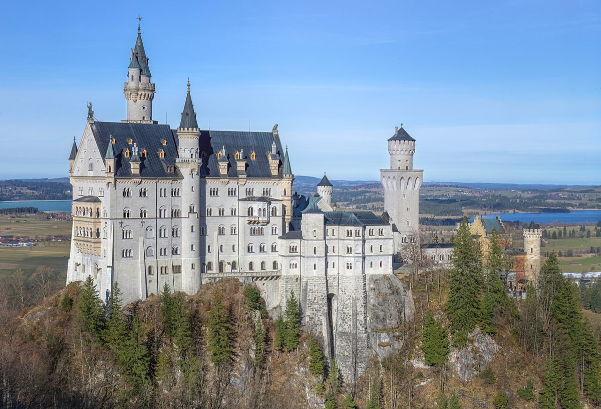

Neuschwanstein Castle: A Fairytale Escape in the Bavarian Alps

Perched high in the Bavarian Alps, Neuschwanstein Castle looks like it's been plucked straight from a storybook. This iconic 19th-century palace inspired Disney's Sleeping Beauty Castle and remains one of Germany's most breathtaking sights. Whether you're a history buff, architecture lover, or just seeking stunning views, Neuschwanstein delivers pure fairytale magic.
Getting to Neuschwanstein
The castle is located near the town of Füssen in southern Bavaria. Most visitors arrive by train from Munich (about 2 hours) or Augsburg (1.5 hours), then take a local bus from Füssen station. If driving, follow the Romantic Road route for scenic countryside views. Parking is available in Hohenschwangau village, where you'll buy entrance tickets before the uphill hike or shuttle ride to the castle.
Best Time to Visit
Spring through early autumn offers the best weather for exploring, with lush greenery and clear skies. Summer is peak season—arrive early to avoid crowds. Winter transforms Neuschwanstein into a snow-dusted wonderland, though some paths may be icy. Note that the castle interior can only be visited on guided tours, which operate year-round except major holidays.
Top Highlights
1. The Throne Room: Though never completed, this grand hall with its Byzantine-style mosaics and 13-foot chandelier is the castle's most impressive interior space.
2. Marienbrücke (Mary's Bridge): This narrow pedestrian bridge behind the castle offers the classic postcard view of Neuschwanstein framed by mountains.
3. Hohenschwangau Castle: King Ludwig II's childhood home sits just below Neuschwanstein and makes for an excellent combined visit with its own rich history.
4. Alpsee Lake: A short walk from the ticket center, this crystal-clear alpine lake is perfect for a peaceful picnic or quick swim in summer.
5. Tegelberg Cable Car: Nearby, this lift whisks you up 5,500 feet for panoramic views of the castle and surrounding Alps.
Local Food to Try
After touring, sample Bavarian specialties like Käsespätzle (cheesy egg noodles), Schweinshaxe (roasted pork knuckle), or Apfelstrudel at village restaurants. For a quick bite, grab a Weißwurst (white sausage) with sweet mustard from a snack stand.
Tips for Your Visit
Wear comfortable shoes—there's significant walking uphill to reach the castle. Photography isn't allowed inside, but the exterior offers endless photo ops. Consider combining your trip with other Romantic Road attractions like Wieskirche or Linderhof Palace. Most importantly, take time to simply marvel at how this real-life fairytale castle came to be.
Haiktec
- The Little Restaurant Success Kit: Simple Strategies to Attract Families & Boost Your Sales
- The Stress-Free Teacher's Guide: 7 Simple Steps to Engage Students & Save Time
- Saarland & Moselle Hidden Gems: A Female Traveler's Guide to Scenic Routes & Local Secrets
Text mit KI erstellt und automatisch geprueft.